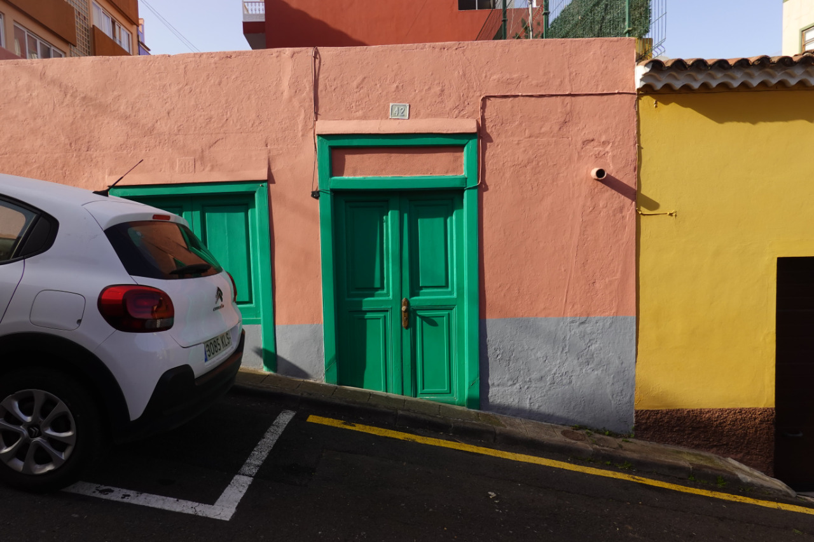

Image dominant colors extraction using WebGPU API with various algorithms
Select or drag'n'drop an image file:
Select algorithm:
Wu
K-Means
Celebi (Wu + K-Means)
Select the number of colors:

Source Code
GitHub